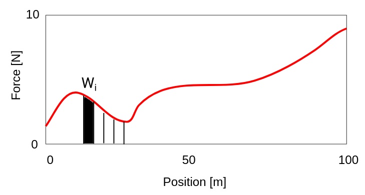
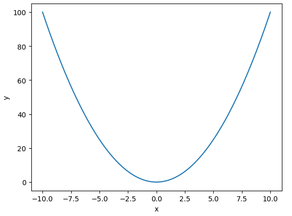
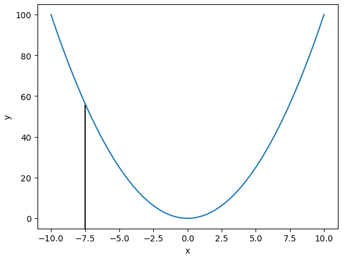
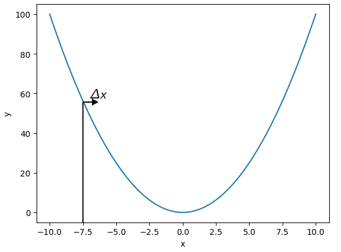
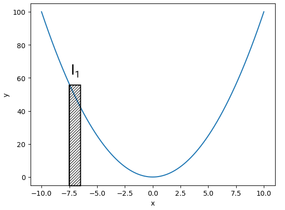
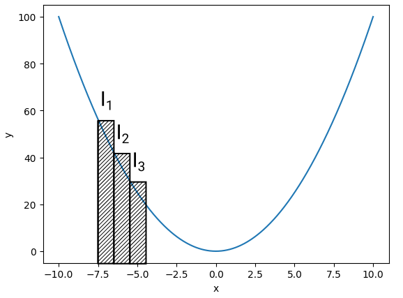

Module 03 - Integration
Dr. Longland
1. The problem
- Calculate work done in moving cart along track
We will split this into small boxes and calculate the individual \(W_i\)


2. Zoom in to investigate methods
- To integrate this, we will first split the curve into small rectangular chunks
We'll find the area of each chunk





3. For more information
- Check out this 3Blue1Brown video
- Read TAK chapter 3.3 up to P. 53.
4. In class
You'll build a function to do this left-point integration. Then you'll check its accuracy.
def leftpoint(f, a, b, N):
h = ...
mysum = ...
return mysum
result = leftpoint(np.sin, 0, np.pi/2, N)
print("The result of the integral is ", result)